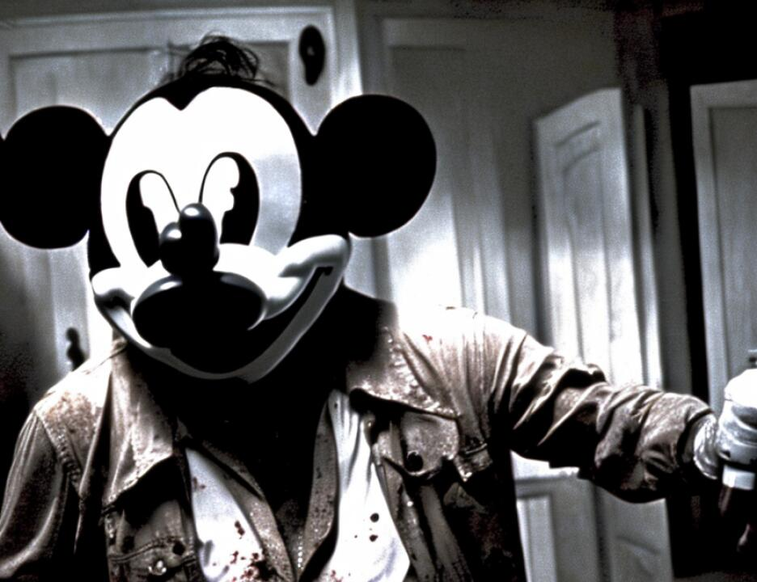

6 (Jury present)
7 THE COURT: Good morning.
8 THE JURY: Good morning.
9 THE COURT: Glad to see you all. Hope you are all
10 feeling well. And the first order of business is the swearing
11 of the marshal.
12 Mr. Kenneally, will you swear the marshal.
13 (Marshal sworn)
14 THE COURT: And ladies and gentlemen, you may return
15 to the jury room and you may begin your deliberations. And
16 will the three alternates please remain in the courtroom.
17 (The jury retires to deliberate upon a verdict at
18 9:42 a.m.)
19 THE COURT: Ladies and gentlemen, my instructions to
20 you this time are the same as the last, and that is that you
21 are to continue to regard yourselves as being members of this
22 jury. You should not read, watch, listen to or anything about
23 this case, and that you keep advised -- I assume the marshal
24 has your telephone number, and we will let you know when the
25 jury reaches a verdict so that you know that you are being
8745
1 discharged. And until that time, why, you are on-call if the
2 need should arise. And you are excused for the day and thank
3 you very much for coming.
4 ALTERNATE JURORS: Thank you.
5 (Alternates excused)
6 THE COURT: Anything?
7 MR. RUHNKE: No, your Honor.
8 MR. FITZGERALD: No, Judge.
9 THE COURT: We'll await word from the jury. If they
10 follow a pattern, we should get a note fairly soon with a
11 request for whatever it is they may want to see.
12 One lawyer for each side to remain in the courtroom.
13 (Recess pending verdict)
14 (In open court; time noted: 10:35 a.m.)
15 THE COURT: I understand there are some problems with
16 respect to the jury's note.
17 MR. FITZGERALD: Yes, Judge. I think we have the
18 exhibits correlated. There are just three issues.
19 There is one exhibit number which does not exist,
20 Government Exhibit 4369. So I think we need to ask the jury
21 what they are referring to since there is no exhibit
22 corresponding to that exhibit.
23 THE COURT: 4369?
24 MR. FITZGERALD: Yes.
25 THE COURT: Okay.
8746
1 MR. FITZGERALD: And then two of the exhibits the
2 jury asked for are not in evidence, that would be 35175-C from
3 the government exhibit list and K.K.M. 30 from the defense
4 exhibit list.
5 THE COURT: Which one?
6 MR. FITZGERALD: K.K.M.-30.
7 THE COURT: K.K.M.-30.
8 MR. FITZGERALD: 30.
9 THE COURT: 4369 is --
10 MR. FITZGERALD: We don't know. There is nothing
11 corresponding to that number.
12 THE COURT: There is no exhibit with that number.
13 MR. RUHNKE: Your Honor, just one matter.
14 THE COURT: K.K.M. 30, and what was the other one?
15 MR. RUHNKE: With regard to the other one --
16 THE COURT: Just tell me the number before you --
17 MR. RUHNKE: Okay. The other one was Government
18 Exhibit 3517S-C.
19 THE COURT: Yes.
20 MR. FITZGERALD: 35175-C.
21 MR. RUHNKE: I'm sorry.
22 THE COURT: What about that?
23 MR. RUHNKE: Your Honor, that was not offered. It is
24 the rough interview notes of Correction Officer Santulli by
25 Agent Randazzo. We did not offer it, mostly through an
8747
1 oversight. We should have offered it. I don't think the
2 government would have objected to it had we offered it at the
3 time.
4 The other exhibit, K.K.M. 30, I understand the
5 government would object to, so I'm not pushing it. I wonder
6 if it could be sent.
7 MR. GARCIA: Your Honor, with respect to 35175, it
8 actually was offered. The government objected. The Court
9 held it out and said you could call Agent Randazzo, the agent.
10 The agent was called, he was examined on the issue, and the
11 exhibit was never offered.
12 But 35175-C was offered.
13 THE COURT: And therefore, the government's position
14 is what?